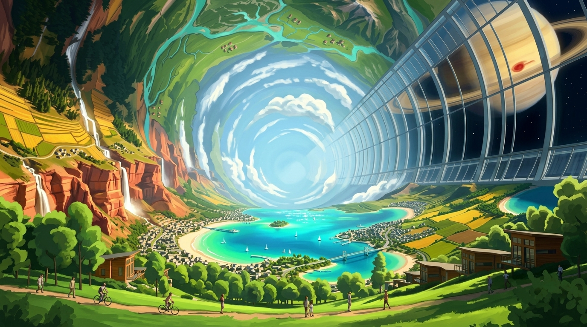
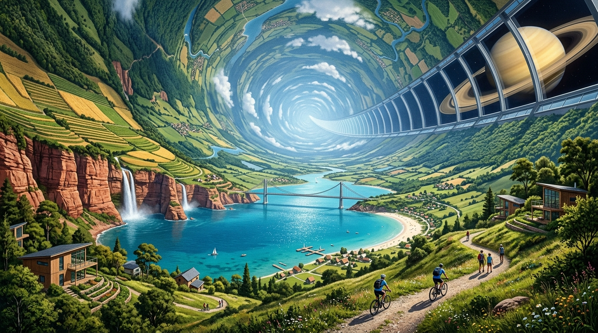
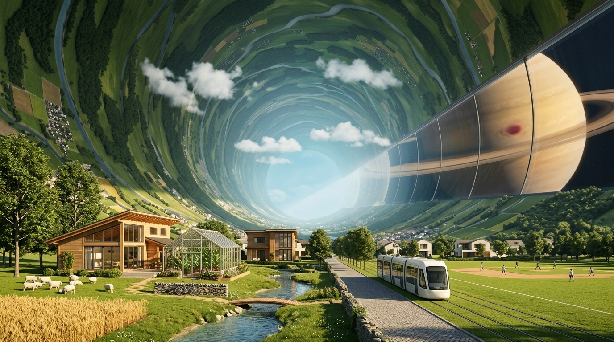
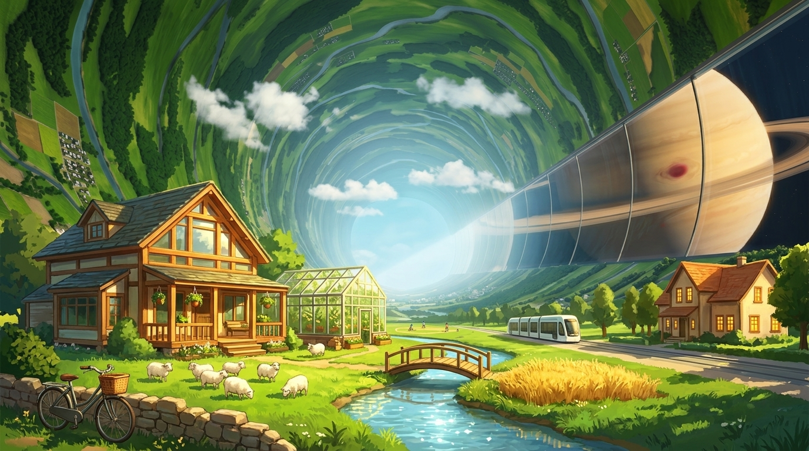
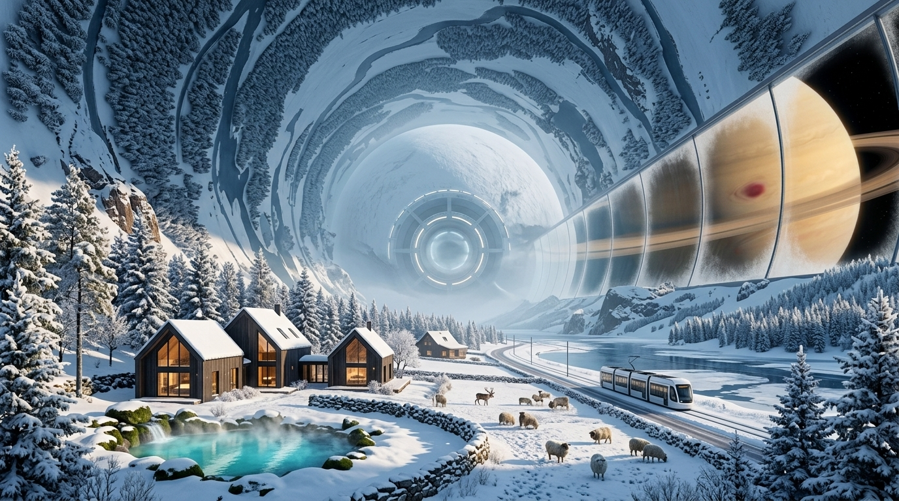
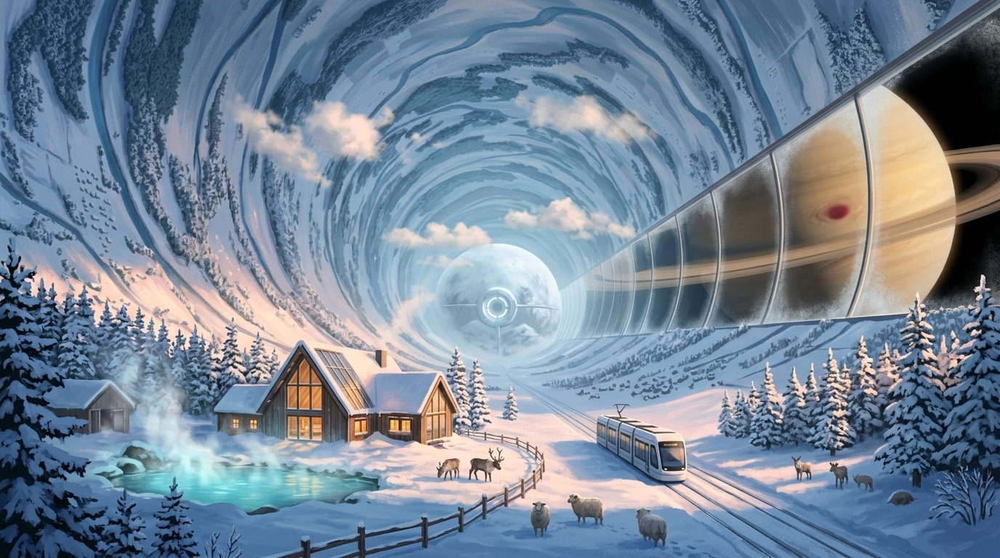
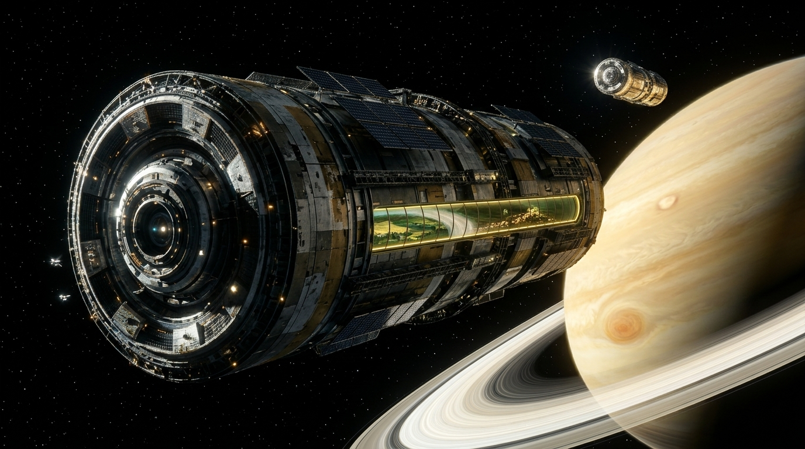
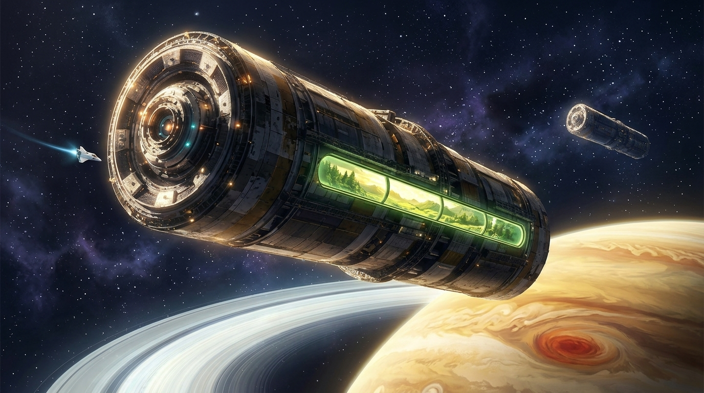

对应悉尼海湾、广州、地中海等低纬或暖冬坐标。谷底铺开 400 m 宽碧蓝泻湖与 280 m 跨湾吊桥，左侧 80 m 红岩双瀑与金色梯田顺筒壁爬升，右侧单侧弧窗框住带红斑的气态巨行星。
IMAX 级日光与蓝白大气透视：前景骑行小径、280 m 跨湾吊桥、80 m 红岩双瀑与单侧土星级巨行星长窗。

通透明快的绘本手绘光影：保留同款 2 km × 6 km 空间纵深，建筑与地形剪影更适配实时 WebGL 渲染。

外冷内暖的奥尼尔圆筒生态方舟——外壳是深邃厚重的硬核工业钢甲，内壁则是绕环带状巨行星航行的 32 km² 田园山河、无边界千户个人农场与渐进失重太空港。
点击任意画作可全屏鉴赏细节；可使用上方按钮一键切换双画风对照
对应悉尼海湾、广州、地中海等低纬或暖冬坐标。谷底铺开 400 m 宽碧蓝泻湖与 280 m 跨湾吊桥，左侧 80 m 红岩双瀑与金色梯田顺筒壁爬升，右侧单侧弧窗框住带红斑的气态巨行星。
IMAX 级日光与蓝白大气透视：前景骑行小径、280 m 跨湾吊桥、80 m 红岩双瀑与单侧土星级巨行星长窗。

通透明快的绘本手绘光影：保留同款 2 km × 6 km 空间纵深，建筑与地形剪影更适配实时 WebGL 渲染。
以人体 1.72 m 为铁尺：单户 80×80 m 农场囊括木玻二层主宅、玻璃花房、3 m 溪流木桥、麦田、羊群与门前单车；跨过 20 m 石墙绿道即可直抵邻居家；白色有轨电车沿轴驶过社区棒球场。

真实人类视平线尺度下的农庄院落与邻里绿道，右侧电车驶过正在进行科里奥利力棒球的社区公园。

吉卜力质感的手绘细节：清晰区分个人建造网格、邻里共享公共小溪与社区基础设施。
接纳冰岛、芬兰、北海道、哈尔滨等经纬度的农场迁入。陡坡现代北欧木屋透出暖光、雪地冒烟地热温泉池伴随羊群与驯鹿，有轨电车沿河开往雪被半球端盖，攀爬越陡越轻直至中心轴 0G 港。

冷峻冬日青蓝雪影衬托地热温泉蒸汽与暖灯室内，远方可见雪白半球端盖逐级攀升至零重力太空港。

极地冰雪童话色调：清楚呈现 400 m 自然冷暖过渡后，筒壁怎样顺半球曲面向旋转中轴收敛。
去掉传统三块大反光翼，回归重装模块化深色装甲、散热/光伏阵列与端盖同心圆 0G 对接口。唯一一条单侧弧窗透出牧歌田园的生机；远方姊妹圆筒方舟靠穿梭机彼此相连。

冰冷工业装甲与窗内生机田园形成极致反差，穿梭机驶向端盖 0G 港口，姊妹方舟悬于冰晶行星环上方。

璀璨冰环与星云光影下清晰的巨构体块与窗内立体景观，为高空太空巡航视图定下明确渲染目标。
全站严格执行 1 场景单位 = 1 米，确保人物、屋舍、水系与 2 km 巨构在同一几何基准下自洽运转
| 系统层级 | 核心元素 | 统一真实尺寸（1 单位 = 1 米） | 空间与玩法职能 |
|---|---|---|---|
| 生命标尺 | 角色 / 动物 | 人物高 `1.72 m`（眼高 `1.60 m`）；犬/狐 `0.5–0.7 m`；羊/驯鹿 `1.0–1.3 m`；马/牛 `1.6–1.8 m` | 全作所有门窗、踏步、护栏、栅栏的不可破坏基准尺 |
| 个人建筑 | Solarpunk 住宅 / 温室 | 单层层高 `3.2 m`；1–2 层主宅总高 `4.5–8.0 m`，面宽 `8–14 m`；花房 `6–10 m` | 统一原木+玻璃+石材现代生态语言，仅随气候改变屋脊坡度与挑檐 |
| 公共交通 | 绿道 / 有轨电车 / 棒球场 | 绿道宽 `3.5 m`；电车林荫道宽 `14 m`；白色电车 `2.6 × 24 m`；棒球场半径 `85 m` | 自行车短途串门、电车 3 分钟纵贯南北、棒球场专测科里奥利力弧线 |
| 水系地貌 | 小溪 / 河流 / 碧湾吊桥 | 小溪宽 `2–5 m`；主干河流 `25–55 m`；南碧湾 `400 × 900 m`；吊桥长 `280 m`；红岩崖 `80 m` | 小溪穿行邻里缓冲带，大河盘旋至头顶倒悬，构成远景银蓝脉络 |
| 植被梯田 | 乔木 / 梯田起伏 | 松/橡/蓝花楹树高 `8–18 m`；缓丘高 `15–55 m`；单级梯田高 `2–4 m` | 柔化筒壁横截圆弧，建立从地面到崖壁的真实过渡层次 |
| 大气宇宙 | 积云 / 弧窗 / 巨行星 | 积云悬浮离地 `450–700 m`；单侧弧窗占圆周 `42°`（宽 `730 m`）；外壳装甲厚 `45 m` | 中轴线性光源+蓝白大气透视，窗外带环巨行星提供宇宙坐标感 |
核心区 `6 400 m²` 可同时容纳主宅、温室、3m 溪流、农田果园与牧场（步行横穿 40 秒、骑车 7 秒），外留 20m 邻里石径与行道树缓冲区，完美适配全球经纬度截取的 `100×100 m` OSM 真实街区地貌。
全筒 60% 永久保留为碧湾、瀑布、公园等公共奇观，40% 规划为约 1 000–1 300 户农场。推门 15 秒步行走进邻居家；空闲地块由 NPC 原住民农庄预填充。前端采用 250 m 半径流式 1:1 高模 + 远景 LOD 方案。
筒壁全程离心平地、北端盖爬坡渐进失重直达 0G 中心港、顺逆转跑步重度差与垂直抛球科里奥利偏转全物理可感；未来超过千人社区后，乘坐 0G 穿梭艇掠过巨行星环即可前往「牧歌二号」姊妹圆筒。
实时切换游戏原画风与写实风，漫步 R = 1000 m 奥尼尔圆筒中段谷地、按地球经纬度即时定制 80×80 m 专属农场、串门邻里绿道并在 42° 巨窗观星台眺望行星。